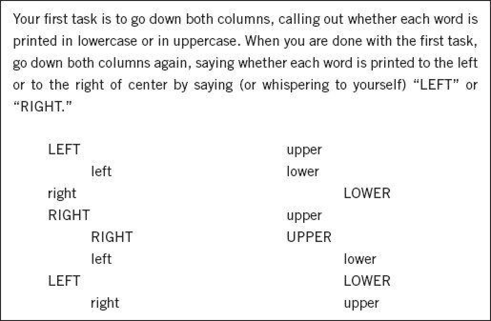
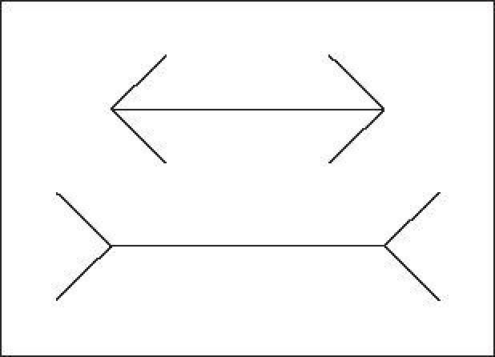

To observe your mind in automatic mode, glance at the image below.
Figure 1
Your experience as you look at the woman’s face seamlessly combines what we normally call seeing and intuitive thinking. As surely and quickly as you saw that the young woman’s hair is dark, you knew she is angry. Furthermore, what you saw extended into the future. You sensed that this woman is about to say some very unkind words, probably in a loud and strident voice. A premonition of what she was going to do next came to mind automatically and effortlessly. You did not intend to assess her mood or to anticipate what she might do, and your reaction to the picture did not have the feel of something you did. It just happened to you. It was an instance of fast thinking.
Now look at the following problem:
17 × 24
You knew immediately that this is a multiplication problem, and probably knew that you could solve it, with paper and pencil, if not without. You also had some vague intuitive knowledge of the range of possible results. You would be quick to recognize that both 12,609 and 123 are implausible. Without spending some time on the problem, however, you would not be certain that the answer is not 568. A precise solution did not come to mind, and you felt that you could choose whether or not to engage in the computation. If you have not done so yet, you should attempt the multiplication problem now, completing at least part of it.
You experienced slow thinking as you proceeded through a sequence of steps. You first retrieved from memory the cognitive program for multiplication that you learned in school, then you implemented it. Carrying out the computation was a strain. You felt the burden of holding much material in memory, as you needed to keep track of where you were and of where you were going, while holding on to the intermediate result. The process was mental work: deliberate, effortful, and orderly—a prototype of slow thinking. The computation was not only an event in your mind; your body was also involved. Your muscles tensed up, your blood pressure rose, and your heart rate increased. Someone looking closely at your eyes while you tackled this problem would have seen your pupils dilate. Your pupils contracted back to normal size as soon as you ended your work—when you found the answer (which is 408, by the way) or when you gave up.
Two Systems
Psychologists have been intensely interested for several decades in the two modagee fi Pn="cees of thinking evoked by the picture of the angry woman and by the multiplication problem, and have offered many labels for them. I adopt terms originally proposed by the psychologists Keith Stanovich and Richard West, and will refer to two systems in the mind, System 1 and System 2.
The labels of System 1 and System 2 are widely used in psychology, but I go further than most in this book, which you can read as a psychodrama with two characters.
When we think of ourselves, we identify with System 2, the conscious, reasoning self that has beliefs, makes choices, and decides what to think about and what to do. Although System 2 believes itself to be where the action is, the automatic System 1 is the hero of the book. I describe System 1 as effortlessly originating impressions and feelings that are the main sources of the explicit beliefs and deliberate choices of System 2. The automatic operations of System 1 generate surprisingly complex patterns of ideas, but only the slower System 2 can construct thoughts in an orderly series of steps. I also describe circumstances in which System 2 takes over, overruling the freewheeling impulses and associations of System 1. You will be invited to think of the two systems as agents with their individual abilities, limitations, and functions.
In rough order of complexity, here are some examples of the automatic activities that are attributed to System 1:
All these mental events belong with the angry woman—they occur automatically and require little or no effort. The capabilities of System 1 include innate skills that we share with other animals. We are born prepared to perceive the world around us, recognize objects, orient attention, avoid losses, and fear spiders. Other mental activities become fast and automatic through prolonged practice. System 1 has learned associations between ideas (the capital of France?); it has also learned skills such as reading and understanding nuances of social situations. Some skills, such as finding strong chess moves, are acquired only by specialized experts. Others are widely shared. Detecting the similarity of a personality sketch to an occupatiohein occupatnal stereotype requires broad knowledge of the language and the culture, which most of us possess. The knowledge is stored in memory and accessed without intention and without effort.
Several of the mental actions in the list are completely involuntary. You cannot refrain from understanding simple sentences in your own language or from orienting to a loud unexpected sound, nor can you prevent yourself from knowing that 2 + 2 = 4 or from thinking of Paris when the capital of France is mentioned. Other activities, such as chewing, are susceptible to voluntary control but normally run on automatic pilot. The control of attention is shared by the two systems. Orienting to a loud sound is normally an involuntary operation of System 1, which immediately mobilizes the voluntary attention of System 2. You may be able to resist turning toward the source of a loud and offensive comment at a crowded party, but even if your head does not move, your attention is initially directed to it, at least for a while. However, attention can be moved away from an unwanted focus, primarily by focusing intently on another target.
The highly diverse operations of System 2 have one feature in common: they require attention and are disrupted when attention is drawn away. Here are some examples:
In all these situations you must pay attention, and you will perform less well, or not at all, if you are not ready or if your attention is directed inappropriately. System 2 has some ability to change the way System 1 works, by programming the normally automatic functions of attention and memory. When waiting for a relative at a busy train station, for example, you can set yourself at will to look for a white-haired woman or a bearded man, and thereby increase the likelihood of detecting your relative from a distance. You can set your memory to search for capital cities that start with N or for French existentialist novels. And when you rent a car at London’s Heathrow Airport, the attendant will probably remind you that “we drive on the left side of the road over here.” In all these cases, you are asked to do something that does not come naturally, and you will find that the consistent maintenance of a set requires continuous exertion of at least some effort.
The often-used phrase “pay attention” is apt: you dispose of a limited budget of attention that you can allocate to activities, and if you try to i>Cyou try tgo beyond your budget, you will fail. It is the mark of effortful activities that they interfere with each other, which is why it is difficult or impossible to conduct several at once. You could not compute the product of 17 × 24 while making a left turn into dense traffic, and you certainly should not try. You can do several things at once, but only if they are easy and undemanding. You are probably safe carrying on a conversation with a passenger while driving on an empty highway, and many parents have discovered, perhaps with some guilt, that they can read a story to a child while thinking of something else.
Everyone has some awareness of the limited capacity of attention, and our social behavior makes allowances for these limitations. When the driver of a car is overtaking a truck on a narrow road, for example, adult passengers quite sensibly stop talking. They know that distracting the driver is not a good idea, and they also suspect that he is temporarily deaf and will not hear what they say.
Intense focusing on a task can make people effectively blind, even to stimuli that normally attract attention. The most dramatic demonstration was offered by Christopher Chabris and Daniel Simons in their book The Invisible Gorilla. They constructed a short film of two teams passing basketballs, one team wearing white shirts, the other wearing black. The viewers of the film are instructed to count the number of passes made by the white team, ignoring the black players. This task is difficult and completely absorbing. Halfway through the video, a woman wearing a gorilla suit appears, crosses the court, thumps her chest, and moves on. The gorilla is in view for 9 seconds. Many thousands of people have seen the video, and about half of them do not notice anything unusual. It is the counting task—and especially the instruction to ignore one of the teams—that causes the blindness. No one who watches the video without that task would miss the gorilla. Seeing and orienting are automatic functions of System 1, but they depend on the allocation of some attention to the relevant stimulus. The authors note that the most remarkable observation of their study is that people find its results very surprising. Indeed, the viewers who fail to see the gorilla are initially sure that it was not there—they cannot imagine missing such a striking event. The gorilla study illustrates two important facts about our minds: we can be blind to the obvious, and we are also blind to our blindness.
Plot Synopsis
The interaction of the two systems is a recurrent theme of the book, and a brief synopsis of the plot is in order. In the story I will tell, Systems 1 and 2 are both active whenever we are awake. System 1 runs automatically and System 2 is normally in a comfortable low-effort mode, in which only a fraction of its capacity is engaged. System 1 continuously generates suggestions for System 2: impressions, intuitions, intentions, and feelings. If endorsed by System 2, impressions and intuitions turn into beliefs, and impulses turn into voluntary actions. When all goes smoothly, which is most of the time, System 2 adopts the suggestions of System 1 with little or no modification. You generally believe your impressions and act on your desires, and that is fine—usually.
When System 1 runs into difficulty, it calls on System 2 to support more detailed and specific processing that may solve the problem of the moment. System 2 is mobilized when a question arises for which System 1 does not offer an answer, as probably happened to you when you encountered the multiplication problem 17 × 24. You can also feel a surge of conscious attention whenever you are surprised. System 2 is activ">< 2 is actated when an event is detected that violates the model of the world that System 1 maintains. In that world, lamps do not jump, cats do not bark, and gorillas do not cross basketball courts. The gorilla experiment demonstrates that some attention is needed for the surprising stimulus to be detected. Surprise then activates and orients your attention: you will stare, and you will search your memory for a story that makes sense of the surprising event. System 2 is also credited with the continuous monitoring of your own behavior—the control that keeps you polite when you are angry, and alert when you are driving at night. System 2 is mobilized to increased effort when it detects an error about to be made. Remember a time when you almost blurted out an offensive remark and note how hard you worked to restore control. In summary, most of what you (your System 2) think and do originates in your System 1, but System 2 takes over when things get difficult, and it normally has the last word.
The division of labor between System 1 and System 2 is highly efficient: it minimizes effort and optimizes performance. The arrangement works well most of the time because System 1 is generally very good at what it does: its models of familiar situations are accurate, its short-term predictions are usually accurate as well, and its initial reactions to challenges are swift and generally appropriate. System 1 has biases, however, systematic errors that it is prone to make in specified circumstances. As we shall see, it sometimes answers easier questions than the one it was asked, and it has little understanding of logic and statistics. One further limitation of System 1 is that it cannot be turned off. If you are shown a word on the screen in a language you know, you will read it—unless your attention is totally focused elsewhere.
Conflict
Figure 2 is a variant of a classic experiment that produces a conflict between the two systems. You should try the exercise before reading on.

Figure 2
You were almost certainly successful in saying the correct words in both tasks, and you surely discovered that some parts of each task were much easier than others. When you identified upper- and lowercase, the left-hand column was easy and the right-hand column caused you to slow down and perhaps to stammer or stumble. When you named the position of words, the left-hand column was difficult and the right-hand column was much easier.
These tasks engage System 2, because saying “upper/lower” or “right/left” is not what you routinely do when looking down a column of words. One of the things you did to set yourself for the task was to program your memory so that the relevant words (upper and lower for the first task) were “on the tip of your tongue.” The prioritizing of the chosen words is effective and the mild temptation to read other words was fairly easy to resist when you went through the first column. But the second column was different, because it contained words for which you were set, and you could not ignore them. You were mostly able to respond correctly, but overcoming the competing response was a strain, and it slowed you down. You experienced a conflict between a task that you intended to carry out and an automatic response that interfered with it.
Conflict between an automatic reaction and an intention to conWhetion to ctrol it is common in our lives. We are all familiar with the experience of trying not to stare at the oddly dressed couple at the neighboring table in a restaurant. We also know what it is like to force our attention on a boring book, when we constantly find ourselves returning to the point at which the reading lost its meaning. Where winters are hard, many drivers have memories of their car skidding out of control on the ice and of the struggle to follow well-rehearsed instructions that negate what they would naturally do: “Steer into the skid, and whatever you do, do not touch the brakes!” And every human being has had the experience of not telling someone to go to hell. One of the tasks of System 2 is to overcome the impulses of System 1. In other words, System 2 is in charge of self-control.
Illusions
To appreciate the autonomy of System 1, as well as the distinction between impressions and beliefs, take a good look at figure 3.
This picture is unremarkable: two horizontal lines of different lengths, with fins appended, pointing in different directions. The bottom line is obviously longer than the one above it. That is what we all see, and we naturally believe what we see. If you have already encountered this image, however, you recognize it as the famous Müller-Lyer illusion. As you can easily confirm by measuring them with a ruler, the horizontal lines are in fact identical in length.

Figure 3
Now that you have measured the lines, you—your System 2, the conscious being you call “I”—have a new belief: you know that the lines are equally long. If asked about their length, you will say what you know. But you still see the bottom line as longer. You have chosen to believe the measurement, but you cannot prevent System 1 from doing its thing; you cannot decide to see the lines as equal, although you know they are. To resist the illusion, there is only one thing you can do: you must learn to mistrust your impressions of the length of lines when fins are attached to them. To implement that rule, you must be able to recognize the illusory pattern and recall what you know about it. If you can do this, you will never again be fooled by the Müller-Lyer illusion. But you will still see one line as longer than the other.
Not all illusions are visual. There are illusions of thought, which we call cognitive illusions. As a graduate student, I attended some courses on the art and science of psychotherapy. During one of these lectures, our teacher imparted a morsel of clinical wisdom. This is what he told us: “You will from time to time meet a patient who shares a disturbing tale of multiple mistakes in his previous treatment. He has been seen by several clinicians, and all failed him. The patient can lucidly describe how his therapists misunderstood him, but he has quickly perceived that you are different. You share the same feeling, are convinced that you understand him, and will be able to help.” At this point my teacher raised his voice as he said, “Do not even think of taking on this patient! Throw him out of the office! He is most likely a psychopath and you will not be able to help him.”
Many years later I learned that the teacher had warned us against psychopathic charm, and the leading authority in the strn y in the udy of psychopathy confirmed that the teacher’s advice was sound. The analogy to the Müller-Lyer illusion is close. What we were being taught was not how to feel about that patient. Our teacher took it for granted that the sympathy we would feel for the patient would not be under our control; it would arise from System 1. Furthermore, we were not being taught to be generally suspicious of our feelings about patients. We were told that a strong attraction to a patient with a repeated history of failed treatment is a danger sign—like the fins on the parallel lines. It is an illusion—a cognitive illusion—and I (System 2) was taught how to recognize it and advised not to believe it or act on it.
The question that is most often asked about cognitive illusions is whether they can be overcome. The message of these examples is not encouraging. Because System 1 operates automatically and cannot be turned off at will, errors of intuitive thought are often difficult to prevent. Biases cannot always be avoided, because System 2 may have no clue to the error. Even when cues to likely errors are available, errors can be prevented only by the enhanced monitoring and effortful activity of System 2. As a way to live your life, however, continuous vigilance is not necessarily good, and it is certainly impractical. Constantly questioning our own thinking would be impossibly tedious, and System 2 is much too slow and inefficient to serve as a substitute for System 1 in making routine decisions. The best we can do is a compromise: learn to recognize situations in which mistakes are likely and try harder to avoid significant mistakes when the stakes are high. The premise of this book is that it is easier to recognize other people’s mistakes than our own.
Useful Fictions
You have been invited to think of the two systems as agents within the mind, with their individual personalities, abilities, and limitations. I will often use sentences in which the systems are the subjects, such as, “System 2 calculates products.”
The use of such language is considered a sin in the professional circles in which I travel, because it seems to explain the thoughts and actions of a person by the thoughts and actions of little people inside the person’s head. Grammatically the sentence about System 2 is similar to “The butler steals the petty cash.” My colleagues would point out that the butler’s action actually explains the disappearance of the cash, and they rightly question whether the sentence about System 2 explains how products are calculated. My answer is that the brief active sentence that attributes calculation to System 2 is intended as a description, not an explanation. It is meaningful only because of what you already know about System 2. It is shorthand for the following: “Mental arithmetic is a voluntary activity that requires effort, should not be performed while making a left turn, and is associated with dilated pupils and an accelerated heart rate.”
Similarly, the statement that “highway driving under routine conditions is left to System 1” means that steering the car around a bend is automatic and almost effortless. It also implies that an experienced driver can drive on an empty highway while conducting a conversation. Finally, “System 2 prevented James from reacting foolishly to the insult” means that James would have been more aggressive in his response if his capacity for effortful control had been disrupted (for example, if he had been drunk).
System 1 and System 2 are so central to the story I tell in this book that I must make it absolutely clear that they are217at they a fictitious characters. Systems 1 and 2 are not systems in the standard sense of entities with interacting aspects or parts. And there is no one part of the brain that either of the systems would call home. You may well ask: What is the point of introducing fictitious characters with ugly names into a serious book? The answer is that the characters are useful because of some quirks of our minds, yours and mine. A sentence is understood more easily if it describes what an agent (System 2) does than if it describes what something is, what properties it has. In other words, “System 2” is a better subject for a sentence than “mental arithmetic.” The mind—especially System 1—appears to have a special aptitude for the construction and interpretation of stories about active agents, who have personalities, habits, and abilities. You quickly formed a bad opinion of the thieving butler, you expect more bad behavior from him, and you will remember him for a while. This is also my hope for the language of systems.
Why call them System 1 and System 2 rather than the more descriptive “automatic system” and “effortful system”? The reason is simple: “Automatic system” takes longer to say than “System 1” and therefore takes more space in your working memory. This matters, because anything that occupies your working memory reduces your ability to think. You should treat “System 1” and “System 2” as nicknames, like Bob and Joe, identifying characters that you will get to know over the course of this book. The fictitious systems make it easier for me to think about judgment and choice, and will make it easier for you to understand what I say.
Speaking of System 1 and System 2
“He had an impression, but some of his impressions are illusions.”
“This was a pure System 1 response. She reacted to the threat before she recognized it.”
P